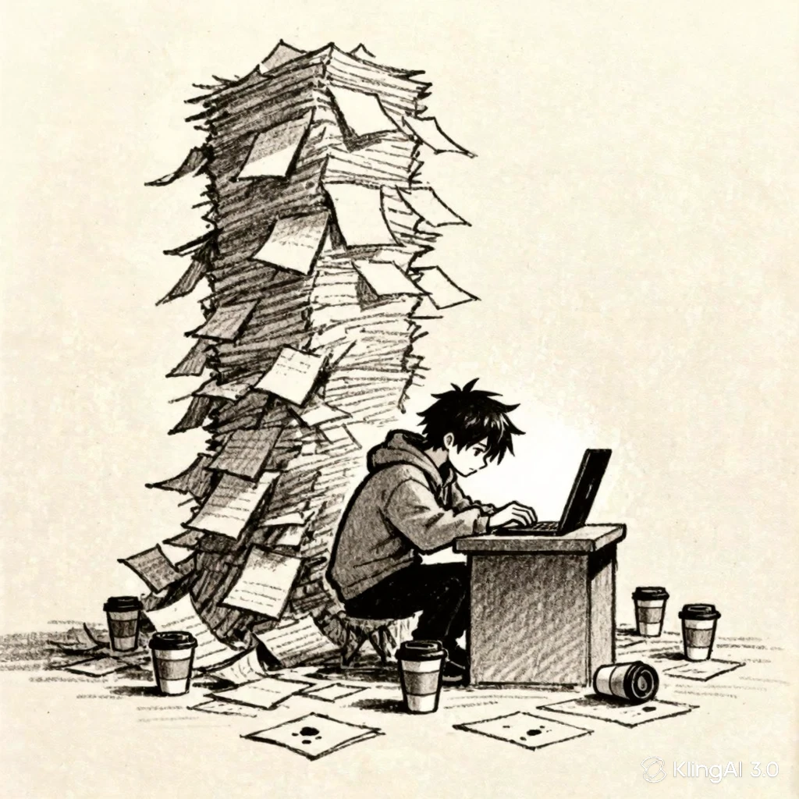
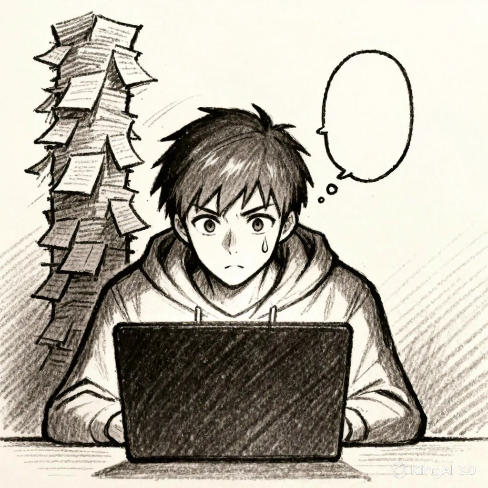
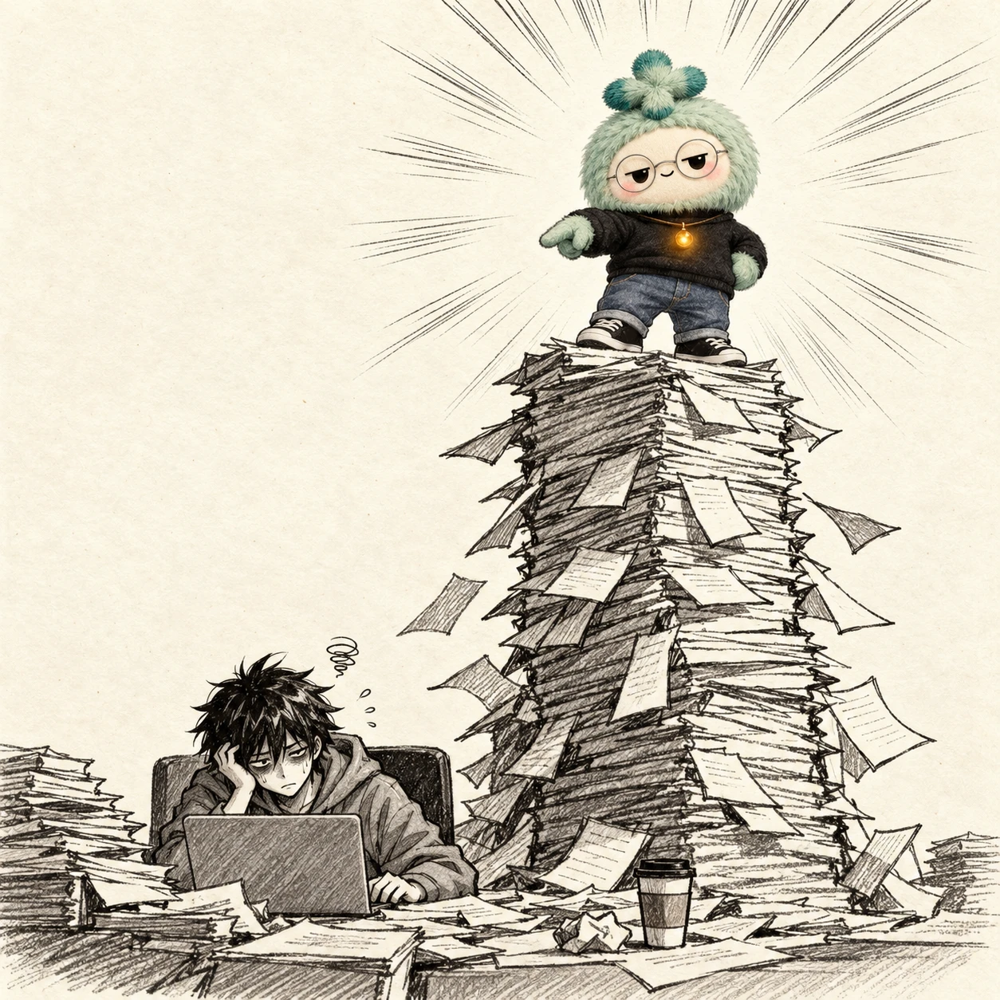
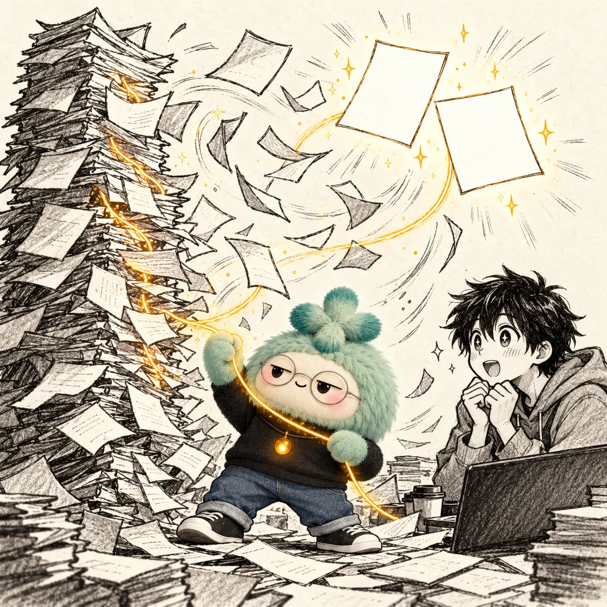
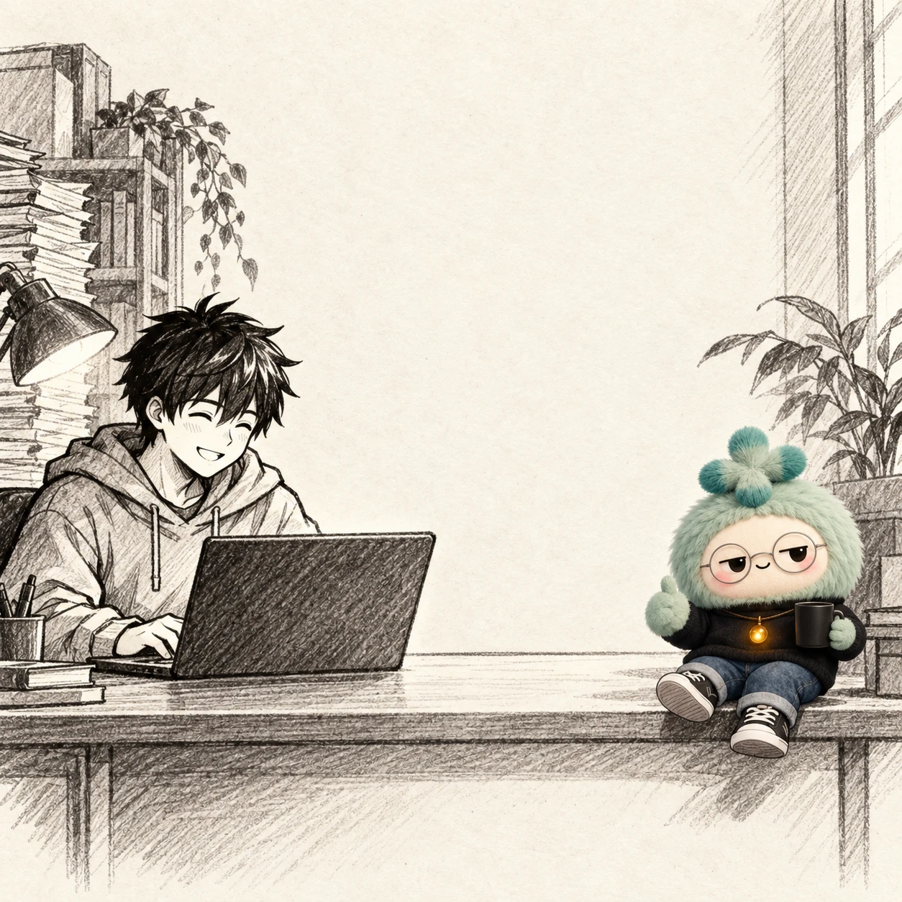

tak
tak
tak!


Your commits already
wrote it, genius.
wrote it, genius.


Told you.
You shipped all week.
…and posted nothing.
It turns the pile into posts.
You ship. It writes. You post.
Meet DiffStory
Type one command.
It finds the lesson in your work.
…and drafts the post. You hit publish.
Idea card 1 of 4
Date-only ranges silently drop your morning commits
Score 8/10Confidence: High✓ Verified
X draft
LinkedIn draft~150 words
Drafts only.
You post it.
You post it.
Introducing
DiffStory
Stop asking what to post.
Your commits already wrote it.
Your commits already wrote it.
A Claude Code skill
github.com/yuvraaj2002/DiffStory
Free · Open source · Drafts only, never posts
You're welcome.